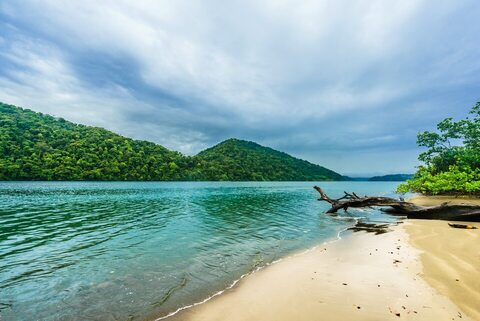

Colombie
Explorez les merveilles de la Colombie, un pays riche en diversité culturelle, naturelle et historique. Des plages tropicales de la côte caribéenne aux sommets enneigés de la Sierra Nevada, en passant par les villes animées de Bogotá et de Medellín, la Colombie offre une expérience unique à chaque voyageur.
Que vous soyez un passionné de randonnée à la recherche d'aventures en montagne, un amateur de gastronomie désireux de déguster les saveurs exquises de la cuisine colombienne, ou un explorateur urbain fasciné par l'histoire et la culture, la Colombie a quelque chose à offrir à chacun. Préparez-vous à être émerveillé par la beauté des paysages, à vous plonger dans la riche histoire du pays et à être enchanté par la chaleur et l'hospitalité de ses habitants.
Notre guide complet vous aidera à planifier votre voyage en Colombie en vous fournissant des informations pratiques sur les sites à visiter, les activités incontournables, les conseils de voyage, les formalités administratives et bien plus encore. Laissez-vous séduire par la magie de la Colombie et embarquez pour une aventure inoubliable dans ce pays fascinant.


10 CONSEILS POUR VOYAGER EN COLOMBIE

- Conservez une bonne perception des distances et des temps de trajet.
- Initiez-vous à quelques rudiments de l'espagnol pour pouvoir communiquer avec les habitants colombiens.
- Prenez votre temps et concentrez-vous sur quelques régions à explorer en profondeur.
- Effectuez des retraits d'espèces dès que l'occasion se présente pour plus de praticité.
- Voyagez en Colombie sans préjugés concernant la sécurité. Adaptez-vous aux règles de bon sens, comme éviter de faire étalage de richesse.
- N'hésitez pas à vous immerger dans la culture locale et à entrer en contact avec les habitants. Les Colombiens sont généralement chaleureux et accueillants.
- Immergez-vous dans l'atmosphère vibrante du pays et explorez sa riche culture.
- Explorez les charmants villages coloniaux et visitez les plantations de café pour découvrir l'âme de la Colombie.
- Évitez de passer trop de temps dans les grandes villes et explorez plutôt les parcs nationaux et les régions naturelles.
- Profitez de la Colombie avant qu'elle ne devienne une destination touristique trop prisée.
Le résumé

Population : 51 millions d'habitants
Monnaie : Peso colombien
Régime politique : République présidentiel
Religion dominante : Catholicisme
Altitude min/max : 0 - 5 775 m ( pic Cristóbal Colón)
Température moyenne : Toute l'année, les températures maximales sont voisines de 27/28 °C et les minimales tournent autour de 17 °C (moyennes mensuelles). Bogota est en altitude il fait donc plus froid qu’à Medellin.
Sécurité des femmes et communauté LGBT+ : Totalement accepté
Etat des routes et sécurité routière : Les routes sont en général bien entretenus. Cependant, il n’est pas rare d’observer des portions de routes fermés pour cause de travaux. Les colombiens ont une conduite “au klaxon”, il est important de rester vigilant en tant que piéton.
Expressions courantes : Qué chimba! : C’est génial ! ¡Qué pena! : Excusez-moi/Quel dommage Dar papaya : Exposer trop ses biens ¡A la orden! : À votre service !
Recommandations : Privilégier les ubers aux taxis Ne pas claquer les portières de voiture S’assoir à l’avant dans les taxis et ubers
Carte d'identité
Le café et l'émeraude
Le café colombien est un des plus réputé au monde. La Colombie est le troisième plus grand producteur de café au monde. Une région entière y est consacré. Cependant, il faut savoir que le café bu par les colombiens et un café de très modeste qualité car toute la production de qualité est exportée vers les Etats-Unis, l’Europe et de nombreux pays.
Contexte politique
En 1948, la société est fracturée entre classe populaire et élite conservatrice. Une guerre civile éclate “la Violencia” jusqu’en 1958. Les FARC(Les Forces armées révolutionnaires de Colombie) et ELN (Armée de libération nationale) émergeant, en 1964, de la guérilla paysanne et de la lutte contre les inégalités sociales et économiques dans le pays. En parallèle de cela, se développe dans les années 70, le narcotrafic avec les cartels. La Colombie est depuis le 1er pays producteur de cocaïne au monde. En 1997, l’AUC (Autodéfenses unies de Colombie) est crée en réponse aux FARC, ELN et cartels. C’est une milice paramilitaire aux idées conservatrices financé par le narcotrafic, des politiciens, des hommes d’affaires (pour leur sécurité/intérêt). Elle est à l’origine du scandale des faux positifs. A partir de 2006, il y a diminution des conflits avec la dissolution de l’AUC et des accords de désarmement sont établis avec les FARC en 2016.
Comuna 13 : le quatier d'espoir
Les années 80 et 90 ont été des années sombres pour la Colombie à cause de l’occupation du pays par les narcotrafiquants. Cependant, l’insécurité tend à diminuer et les colombiens souhaitent effacer cette imager ternie. La comuna trece est exemple d’espoir. En effet, ce quartier de Medellin qui était l’un des plus pauvres et des plus dangereux est aujourd’hui la quartier le plus visité de la ville.
Lieux à visiter
Île de Providencia
Au large de la Colombie, proche des côtes du Nicaragua se situe l’île de Providencia. Ce bout de terre qui émerge de la mer des Caraïbes est un véritable paradis. Vous y découvrirez de magnifiques plages de sable fin bordées de denses forêts tropicales. L’accès à Providencia n’est pas des plus simples. En effet, il n’existe pas de liaison directe depuis le continent. Pour vous y rendre, vous devrez transiter par l’île de San Andrés puis prendre le ferry (3h30) ou plus rapidement un petit avion (20 min). Conséquence de ce relatif isolement, Providencia conserve son authenticité. Ici, vous ne rencontrerez pas des foules de visiteurs et pourrez profiter d’un coin de plage, seul. De plus, vous ne trouverez pas de grands hôtels sur l’île, mais uniquement des auberges réparties un peu partout dans les hameaux.
Parc National Naturel d'Amacayacu
Voici l’un des privilèges qu’offre un voyage en Colombie. Celui de pouvoir s’immerger dans l’un des plus grands et riches écosystèmes de la planète : l’Amazonie. À l’extrême Sud du pays et même si son accès réclame un peu de patience, le Parc National Naturel Amacayacu récompense les voyageurs qui osent s’y aventurer. Foulez ce territoire à la découverte d’une faune et d’une flore exceptionnelle et vivez l’expérience d’une marche dans la jungle. Les serpents, araignées et autres millions d’insectes font partie du décor. La biodiversité est ici à son apogée. Comme dans un documentaire, vous voilà en train de remonter le fleuve Amazone à bord d’une pirogue. Vous saisirez comment vivent les populations locales et passerez la nuit dans l’immense jungle accompagné d’Amérindiens. Un sentiment hors du commun. On accède au parc depuis la ville de Leticia ou depuis le village de Puerto Nariño.
Bahia Solano
À l’ouest du pays, Bahia Solano est l’une des principales villes du département de Chocó. Vous découvrirez dans cette région des forêts tropicales extrêmement denses qui s’étendent jusqu’aux eaux du Pacifique. En raison d’un accès plus difficile, ce territoire conserve son état naturel. Depuis la ville, plusieurs sentiers de randonnée permettent de rejoindre des cascades ou d’observer les grenouilles de la forêt humide. Quelques jolies plages sont facilement accessibles ainsi que des spots de plongée, mais Bahia Solano est surtout le lieu idéal pour aller observer les baleines qui croisent au large durant les mois de juillet à octobre. Voir notre article Quand Partir.
Salento et la vallée de Cocora
Au cœur des terres colombiennes et au sud de Medellín, la petite ville de Salento attire certes pour sa proximité avec la vallée de Cocora, mais pas uniquement. Entourée de montagnes verdoyantes, à près de 2 000 m d’altitude, Salento possède un certain charme avec sa rue principale où fleurissent les boutiques d’artisanat local, les restaurants et ses ruelles à l’architecture paisa. Dans la zona cafetera, vous pourrez évidemment, depuis Salento, visiter une ferme de production de café colombien. Depuis le centre-ville, empruntez le sentier qui conduit à l’Alto de la Cruz et appréciez la vue sur la magnifique vallée de Cocora. Elle s’étend de Salento jusqu’au Parc national Naturel de Los Nevados. Les montagnes tapissées de verdure où grandissent les palmiers à cire géants (près de 60 mètres) composent l’un des plus spectaculaires paysages de Colombie. Une randonnée dans la vallée est le meilleur moyen de découvrir l’arbre national dont la cime aime se cacher dans les nuages.
Capurganá et Sapzurro
À l’extrême Ouest de la côte Caraïbe, tout proche du Panama, se cache un endroit que la plupart des gens qualifieraient de paradisiaque. Dans ces deux villages de pêcheurs règne une atmosphère calme et détendue. Pour le moment, Capurganá et Sapzurro sont peu visités. En effet, il n’existe pas de route. C’est uniquement en bateau depuis Turbo ou Necoclí que vous pourrez rejoindre ces villages. Profitez de la plage avec le bleu de la mer des Caraïbes en toile de fond et vivez vos journées au rythme des locaux.
La Guajira
La péninsule de La Guajira se situe à l’extrême Nord de la Colombie. Les voyageurs en quête d’aventure vont être comblés. Le sable couvre l’ensemble de la région. Quelques villages émergent de ce désert et la mer des Caraïbes délimite le territoire. La poussière et les dunes qui s’étendent à perte de vue laissent place, par endroit, à des plages où le bleu vert émeraude de l’eau contraste avec le sable ocre des falaises.
Votre itinéraire type en Colombie
Commencez votre voyage en explorant Medellín, une ville qui a radicalement transformé son image pour devenir un symbole de renaissance. Explorez ses quartiers dynamiques, admirez l'art de rue coloré et prenez le téléphérique jusqu'aux hauteurs pour profiter d'une vue panoramique sur la ville. Assurez-vous de visiter le musée d'Antioquia et le Parque Arvi.
Quittez Medellín pour les paisibles montagnes de Salento, une ville coloniale pittoresque nichée au cœur de la région du café colombien. Imprégnez-vous de l'atmosphère paisible de la ville, explorez les plantations de café environnantes et partez en randonnée dans la spectaculaire Vallée de Cocora, où vous trouverez les majestueux palmiers à cire, emblèmes nationaux de la Colombie.
En route vers Medellín, arrêtez-vous dans la ville pittoresque de Jardín. Flânez dans ses rues colorées, visitez la magnifique Église de la Mère de Dieu et embarquez pour une aventure souterraine dans la grotte splendide. Profitez de l'ambiance chaleureuse et de l'accueil chaleureux des habitants de cette charmante ville colombienne.
Prenez le temps de vous détendre sur les plages préservées de Rincon del Mar. Profitez du soleil des Caraïbes, plongez dans les eaux turquoise et savourez des fruits de mer frais dans ce petit paradis côtier. C'est l'endroit idéal pour vous ressourcer après vos aventures dans les montagnes.
Continuez votre voyage vers l'est le long de la côte jusqu'à Carthagène, une ville côtière emblématique de la Colombie. Plongez dans son passé colonial en vous promenant dans ses rues pavées bordées de bâtiments colorés et de balcons fleuris. Visitez le Castillo San Felipe de Barajas, flânez dans la vieille ville fortifiée et imprégnez-vous de l'atmosphère animée de la place principale, la Plaza de la Trinidad.
Terminez votre périple par une exploration de Santa Marta et de ses environs spectaculaires. Utilisez cette ville comme base pour explorer le Parc National Naturel de Tayrona, où vous découvrirez des plages de sable blanc bordées de palmiers et des sentiers de randonnée à travers la jungle. Ne manquez pas non plus de visiter le charmant village de montagne de Minca, connu pour ses cascades pittoresques, ses plantations de café et son ambiance détendue.
La partie administrative
Types de visas
| Type de visa/autorisation | Durée maximum d’un séjour | Durée de validité | Prix | Prolongation possible |
|---|---|---|---|---|
| Exemption de visa | 90 jours | - | Gratuit | Oui |
| Visa Vacances-Travail | 1 an | 30 jours | Gratuit | Non |
Exemption de visa
Les citoyens de l'Union européenne, les ressortissants suisses et canadiens sont dispensés de l'obligation de visa pour un séjour de moins de 90 jours en Colombie.
Pour obtenir le Permiso de Ingreso y Permanencia (PIP), une autorisation temporaire de séjour de 90 jours, vous avez besoin d'un passeport valide pour une durée de 6 mois après votre départ de Colombie et d'un billet de continuation.
Prolongation d'exemption
Vous avez la possibilité de prolonger votre visa touristique avant son expiration, en choisissant entre deux options :
- Sortir du pays et y retourner pour obtenir un nouveau PIP, ce qui vous accordera une nouvelle autorisation de séjour de 90 jours.
- Faire une demande de prolongation en ligne sur le site des services d'immigration colombiens. Vous recevrez alors un Permiso Temporal de Permanencia (PTP) gratuit, qui prolonge votre permis de séjour de 90 jours.
Quelle que soit l'option choisie, vous ne pouvez pas rester plus de 180 jours par année calendaire en Colombie. Si vous souhaitez prolonger votre séjour, vous devrez alors faire une demande de visa régulier.
Frais bancaires
Lorsque vous retirez de l’argent, deux types de frais peuvent s’appliquer : ceux de votre banque française et ceux de la banque colombienne dans laquelle vous retirez.
Où retirer ?
| Banque | Frais en pesos colombiens | Frais en euros | Retrait max en pesos colombiens | Retrait max en euros |
|---|---|---|---|---|
| ATH | 10 500 Pesos | 2,11 € | 600 000 Pesos | 120 € |
| Banco Caja Social | Pas de frais | 700 000 Pesos | 140 € | |
| Banco de Bogotá | 13 000 Pesos | 2,62 € | 600 000 Pesos | 120 € |
| Banco Popular | 10 500 Pesos | 2,11 € | 600 000 Pesos | 120 € |
| Bancolombia | 14 000 Pesos | 2,82 € | 600 000 Pesos | 120 € |
| Banred | 13 000 Pesos | 2,62 € | ||
| BBVA | 18 000 Pesos | 3,62 € | 300 000 Pesos | 60 € |
| Bradesco | 13 000 Pesos | 2,62 € | ||
| Citybank | 15 000 Pesos | 3,02 € | 1 200 000 Pesos | 240 € |
| Colpatria | Pas de frais | 400 000 Pesos | 80 € | |
| Davivianda | Pas de frais | 2 000 000 Pesos | 400 € | |
| Itau | 13 000 Pesos | 2,62 € | ||
| Santander | 13 000 Pesos | 2,62 € | ||
| Servibanca | 22 500 Pesos | 4,53 € | 780 000 Pesos | 160 € |
Les vaccins
Avant de vous faire vacciner, assurez-vous dans votre carnet de santé que vous n’avez pas déjà reçu des injections pour des voyages antérieurs. Vérifiez également que vous êtes à jour de vos vaccins classiques : Diphtérie, Tétanos, Poliomyélite, Coqueluche, Hépatite B, Méningite, Rougeole, Oreillons, Rubéole et Covid.
Je vous conseille fortement d'aller visiter le site de l'Institut Paster qui donne les informationsà ce sujet en temps réel par pays ce qui est exactement votre besoin.
| Maladie | Mode de transmission | Recommandations de l’Institut Pasteur pour la Colombie | Schéma vaccinal adultes | Enfants |
|---|---|---|---|---|
| Hépatite A | Eau et nourriture | Vaccin recommandé à tous les voyageurs | 1 injection au moins 15 jours avant le départ Rappel recommandé 6 à 12 mois après la première injection (en cas d’oubli, il peut être administré jusqu’à 3 à 5 ans après la première injection) Durée de protection : au moins 10 ans |
À partir de 1 an |
| Rage | Animaux infectés (chiens, chauve-souris…) | Vaccin recommandé aux voyageurs qui prévoient un séjour long ou aventureux et dans des lieux isolés, surtout les jeunes enfants. Le vaccin ne dispense pas d’un traitement curatif à prendre très rapidement en cas d’exposition. Il simplifie juste le traitement. | 3 injections : la deuxième 7 jours après la première, la troisième 28 jours après la première | Dès qu’ils marchent |
| Tuberculose | Voie aérienne | Vaccin BCG recommandé aux enfants en cas de séjours fréquents ou supérieurs à un mois. Elle peut être réalisée jusqu’à l’âge de 15 ans. | 1 injection | Dès la naissance |
| Typhoïde | Eau et nourriture | Vaccin recommandé aux voyageurs en cas de séjour long ou dans de mauvaises conditions | 1 injection 15 jours avant le départ Durée de protection : 3 ans |
À partir de 2 ans |
| Encéphalite japonaise | Moustiques | Vaccin non recommandé | 2 injections à 28 jours d’intervalle Rappel 12 à 24 mois après la première injection |
À partir de 2 mois |
| Encéphalite à tique | Tiques | Vaccin non recommandé | 3 injections : le deuxième 1 à 3 mois après la première, la deuxième 9 à 12 mois après la première | À partir de 1 an |
| Fièvre jaune | Moustiques | Risque présent sur la majorité du territoire en dessous de 2 300 m. La vaccination est recommandée pour tous les voyageurs enfants et adultes surtout si vous visitez l’Amazonie. La vaccination est obligatoire pour les voyageurs en provenance du Brésil, de la république démocratique du Congo, d’Angola et d’Ouganda. | 1 injection 10 jours avant le départ Durée de protection : à vie (sauf certains cas particuliers) |
À partir de 9 mois (entre 6 et 9 mois dans certains cas particuliers) |
Sources : Institut Pasteur, France Diplomatie, Hôpital Bichat, Vidal, MesVaccins.net, Center for Disease Control and Prevention et Fit for Travel
Contacts utiles
Ambassade de Colombie à Paris
Adresse : 22, rue Élysée 75008 Paris
Téléphone : 01 42 65 46 08
Email : efrancia@cancilleria.gov.co
Site Web : Site Web de l'Ambassade de Colombie à Paris
Consulat de Colombie à Paris
Adresse : 12, rue de Berri 75008 Paris
Téléphone : 01 53 93 91 91
Email : cparis@cancilleria.gov.co
Horaires d’ouverture : du lundi au vendredi de 8h30 à 13h30
Site Web : Site Web du Consulat de Colombie à Paris